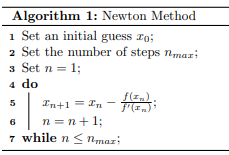
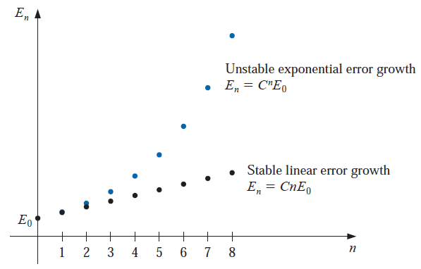

Topic 5 Error Analysis, Algorithms and Convergence
We briefly introduce sources of errors in numerical analysis and concepts of convergence of algorithms.
5.1 Error Analysis
We briefly outline the sources and types of errors.
5.1.1 Understanding Numerical Error
We have seen that every computerized representation of real numbers with fractional parts is forced to employ rounding and other approximations. Rounding, however, represents one of many sources of error in numerical systems.
Rounding or truncation error comes from rounding and other approximations used to deal with the fact that we can only represent a finite set of values using most computational number systems. ** For example,**, it is impossible to write \(\pi\) exactly as an IEEE 754 floating-point value, so in practice, its value is truncated after a finite number of digits.
Discretization error comes from our computerized adaptations of calculus, physics, and other aspects of continuous mathematics. For example, a numerical system might attempt to approximate the derivative of a function \(f(t)\) using divided differences: \[ f^\prime(t) \approx \frac{f(t+\epsilon) - f(t)}{\epsilon} \] for some fixed choice of \(\epsilon\). We must use a finite \(\epsilon > 0\) rather than taking a limit as \(\epsilon → 0\), the resulting value for \(f^\prime(t)\) is only accurate to some number of digits. This results in a discretization error.
Modeling These errors arise during the modeling process when scientists ignore effecting factors in the model to simplify the problem. Also, these errors are known as formulation errors.
5.1.2 Error Classification
Let \(P = 1.354595\) is the true value and \(P^* = 1.354675\) an approximated value. Three types of errors will be used from time to time throughout the semester.
The actual error is defined to be \(P-P^* = 1.354595-1.354675 = -0.00008 = -8 \cdot 10^{-5}\).
The absolute error is defined to be \(|P-P^*| = |1.354595 - 1.354675| = 0.00008 = 8 \cdot 10^{-5}\)
The relative error is generally defined to be \(|P-P^*|/P\), \(p \ne 0\). With the given values of \(P\) and \(P^*\), we have
\[ \frac{|P-P^*|}{|P|} = \frac{|1.354595 - 1.354675|}{|1.354595|} = 5.905475\times 10^{-05} \]
The relative errors are frequently used in error analysis throughout this semester.
5.1.3 Approximation Significant Digits (Figures)
The number \(P^*\) is said to approximate \(P\) to \(t\) significant digits if \(t\) is the largest non-negative number such that
\[ \frac{|P-P^*|}{|P|} < 5\times 10^{-t} \]
Example 1: We still use \(P = 1.354595\) as the true value and \(P^* = 1.354675\) an approximated value. We have calculated
\[ \frac{|P-P^*|}{|P|} = \frac{|1.354595-1.354675|}{|1.354595|} = 5.905475\times 10^{-05} \]
Since \(5\times 10^{-05} < 5.905475\times 10^{-05} < 5\times 10^{-04}\). Therefore, by the definition, the approximation significant digit is 4.
Example 2 (refer to Example 5 of the textbook, page 25.) Let \(p=0.54617\) and \(q=0.54601\). Use four-digit arithmetic to approximate \(p - q\) and determine the absolute and relative errors using (a) rounding and (b) chopping.
Solution: The exact value of \(r = p - q\) is \(r = 0.00016\).
(a): Suppose the subtraction is performed using four-digit rounding arithmetic. Rounding p and q to four digits gives \(p^* = 0.5462\) and \(q^* = 0.5460\), respectively, and \(r^* p^* - q^* = 0.0002\) is the four-digit approximation to r. Since \[ \frac{|r - r^*|}{|r|} = \frac{|0.00016 - 0.0002|}{|0.00016|} = 0.25 = 2.5\times 10^{-1} < 5\times 10^{-1}. \]
By the definition, the result has only one significant digit, whereas \(p^*\) and \(q^*\) were accurate to four and five significant digits, respectively.
(b). If chopping is used to obtain the four digits, the four-digit approximations to \(p\), \(q\), and \(r\) are \(p^* = 0.5461\), \(q^* = 0.5460\), and \(r^* = p^* - q^* = 0.0001\). This gives
\[ \frac{|r - r^*|}{|r|} = \frac{|0.00016 - 0.0001|}{|0.00016|} = 0.375 = 3.75\times 10^{-1} < 5\times 10^{-1}. \] which also results in only one significant digit of accuracy.
5.1.4 Nested Arithmetic
Accuracy loss due to round-off error can also be reduced by rearranging calculations, as shown in the next example.
Example 3: [examples 6 and 7 of the textbook, pages 25-27 ]. Consider polynomial \(f(x) = x^3 - 6.1x^2 + 3.2x + 1.5\). Evaluate \(f(x)\) at = \(x = 4.71\) using three-digit arithmetic.
Solution: We calculate approximations
Exact value: \(f(x) = 4.71^3 - 6.1\times 4.71^2 + 3.2\times 4.71 + 1.5 = -14.263899\)
Rounding term-wise: \(f(x) = 104 - 135 + 15.1 + 1.5 = -14.4\)
Nest rounding: \(f(x) = ((4.71 - 6.1)\times 4.71 + 3.2)\times 4.71 + 1.5=(-6.54+3.2)\times4.71+1.5 = -15.7+1.5 = 14.2\).
The above evaluation can be done using the following R code.
x = 4.71
f.exact = x^3 - 6.1* x^2 + 3.2*x + 1.5
f.3digit = signif(x^3,3) - signif(6.1* x^2,3) + signif(3.2*x,3) + 1.5
f.3digit.nest = signif((signif((x-6.1)*x,3) + 3.2)*x,3) + 1.5
cbind(f.exact=f.exact, f.3digit=f.3digit, f.3digit.nest=f.3digit.nest)## f.exact f.3digit f.3digit.nest
## [1,] -14.2639 -14.4 -14.3The relative errors of the two different approximations are \[ \text{Non-nest approximation} = \frac{|-14.2639 - (-14.4)|}{|-14.2639|} \approx 0.00954157 \]
\[ \text{Nest approximation} = \frac{|-14.2639 - (-14.3)|}{|-14.2639|} \approx 0.002530865 \] Therefore, the nested arithmetic yields less approximation error.
Polynomials should always be expressed in the nested form before performing an evaluation because this form minimizes the number of arithmetic calculations. The error in the Illustration is due to the reduction in computations from four multiplications and three additions to two multiplications and three additions. One way to reduce round-off error is to reduce the number of computations.
5.2 Algorithms and Convergence
The objective of numerical analysis is to solve continuous problems using numeric approximation but accurate numeric solutions. Numerical methods (or algorithms) are used in cases where the exact solution is impossible or prohibitively expensive to calculate.
5.2.1 Algorithm and Psuedo-code
An algorithm is a procedure that describes, in an unambiguous manner, a finite sequence of steps to be performed in a specified order. The object of the algorithm is to implement a procedure to solve a problem or approximate a solution to the problem.
Pseudo-code is a programmatic description of an algorithm that does not require any strict programming language syntax or underlying technology considerations. It is a rough draft of a program. Pseudo-code summarizes a program’s flow, which is something like

5.2.2 Rules of Pseudo-code
The purpose of using pseudo-code is an efficient key principle of an algorithm. It is used in planning an algorithm by sketching out the structure of the program before the actual coding takes place. The basic rules of writing pseudo-code are
Rule 1: Write only one statement per line
Each statement in the pseudo-code should express just one action for the computer. If the task list is properly drawn, then in most cases each task will correspond to one line of pseudo-code
Rule 2: Capitalize initial keyword
There are just a few keywords we will use: WRITE, OUTPUT, IF, ELSE, ENDIF, WHILE, ENDWHILE, REPEAT, UNTIL
Rule 3: Indent to show hierarchy
We will use a particular indentation pattern in each of the design structures:
SEQUENCE: keep statements that are “stacked” in sequence all starting in the same column.
SELECTION: indent the statements that fall inside the selection structure, but not the keywords that form the selection.
LOOPING: indent the statements that fall inside the loop, but not the keywords that form the loop.
Rule 4: End multi-line structures
See how the IF/ELSE/ENDIF is constructed in the next example. The ENDIF (or END whatever) always is in line with the IF (or whatever starts the structure).
Rule 5: Keep statements language independent
Pseudo-code should not be tied to any programming language. It can be implemented in any language, whether it’s C++, Java, Python, MATLAB, R, or any other programming language.
Example 4: The nth Taylor polynomial for \(f (x) = e^x\) expanded about \(x_0 = 0\) is \[ P_n(x) =\sum_{i=0}^n \frac{x^i}{i!} \] and the value of \(e\) to six decimal places is 2.718282. Construct an algorithm to determine the minimal value of \(n\) required for \[ |e - P_n(1)| < 10^{-5}, \] without using the Taylor polynomial remainder term.
Solution: The objective is to determine the degrees of the Taylor polynomial evaluated at \(x = 1\) to approximate \(e\). The input values are (1) tolerance TOL and the initial degree of the Taylor polynomial. The output is the smallest degree of the Taylor polynomial that meets \(|e - P_n(1)| < TOL\).
Caution: In general, one should consider to include two stopping rules: error tolerance and maximum iterations. In this particular example, the maximum number of iterations is simply the solution of the problem. Therefore, there is one stopping rule: TOL
INPUT initial degree: n,
tolerance: TOL,
OUTPUT the desired degree N of the polynomial
Step 1. SET n = 0;
SUM = 0;
ERR = exp(1);
Step 2. WHILE ERR > TOL DO:
1. SUM = SUM + 1/n! # n! = n factorial
ERR = exp(1) - SUM # exp(1) = 2.718282
2. IF |ERR| < TOL DO:
OUTPUT (N)
WRITE (tolerance achieved!)
STOP
ELSE DO:
n = n + 1
ENDIF
ENDWHILE
5.2.3 Stability of Algorithms
Roughly speaking, the stability of an algorithm measures how good the algorithm is at solving problems to achievable accuracy. In practice, there could have several algorithms for solving one problem and some algorithms are better than others. Those algorithms that get unnecessarily inaccurate answers are called unstable.
To further consider the subject of round-off error growth and its connection to algorithm stability, suppose an error with magnitude \(E_0 > 0\) is introduced at some stage in the calculations and that the magnitude of the error after \(n\) subsequent operations is denoted by \(E_n\). The two cases that arise most often in practice are defined as follows.
Growth of Error: Suppose that \(E_0 > 0\) denotes an error introduced at some stage in the calculations and \(E_n\) represents the magnitude of the error after \(n\) subsequent operations.
If \(E_n \approx CnE_0\), where \(C\) is a constant independent of \(n\), then the growth of error is said to be linear.
If \(En \approx C^nE_0\), for some \(C > 1\), then the growth of error is called exponential.

5.2.4 Rates of Convergence
Since iterative techniques involving sequences are often used, this section concludes with a brief discussion of some terminology used to describe the rate at which convergence occurs. In general, we would like the technique to converge as rapidly as possible. The following definition is used to compare the convergence rates of sequences.
Convergence Sequence: Suppose \(\{\beta_n \}_{n=1}^\infty\) is a sequence known to converge to zero, and \(\{\alpha_n \}_{n=1}^\infty\) converges to a number \(\alpha\). If a positive constant K exists with \[ |\alpha_n - \alpha| \le K|\beta_n|, \text{ for large } n, \] then we say that \(\{\alpha_n \}_{n=1}^\infty\) converges to \(\alpha\) with rate, or order, of convergence \(O(\beta_n)\). (This expression is read “big oh of \(\beta_n\)”.) It is indicated by writing \(\alpha_n = \alpha + O(\beta_n)\).
Remark: Since sequence, \(\{1/n^p \}_{n=1}^\infty\) (for some \(p\)) is a simple sequence, it is usually used as the base sequence to define the rate of convergence. In other words, we are interested in the largest value of \(p\) such that \(\alpha_n = \alpha + O(1/p^n)\).
Example 5: Consider two sequences \(\{\alpha_n \}_{n=1}^\infty\) and \(\{\beta_n \}_{n=1}^\infty\) where \[ \alpha_n = \frac{n+1}{n^2} \text{ and } \beta_n = \frac{n + 3}{n^3}. \] What is the rate of convergence of the two sequences?
Solution: Note that \[ \lim_{n \to \infty}\alpha_n = \lim_{n \to \infty}\frac{n+1}{n^2} = 0 \text{ and } \lim_{n \to \infty}\beta_n = \lim_{n \to \infty}\frac{n + 3}{n^3} = 0. \] Therefore, \(\alpha_n = 0 + O(\frac{1}{n})\) and \(\beta_n = 0 + O(\frac{1}{n^2})\). In other words, the convergence rate of \(\{\alpha_n \}\) and \(\{ 1/n\}\) are the same, and \(\{\beta_n\}\) and \(\{1/n^2 \}\) are the same.